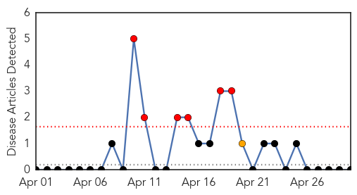
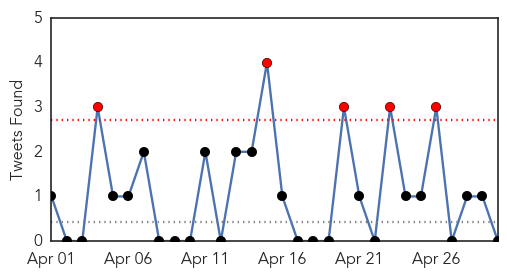

Mold/Fungal
30-Day Web Trend
6 alerts, 1 warnings

30-Day Twitter Trend
0 alerts, 0 warnings

Article Locations

Article Confidences

Top Articles:
-
No articles found for Apr 30, 2014
Top Tweets:
-
No tweets found for Apr 30, 2014
Unknown
30-Day Web Trend
0 alerts, 0 warnings
30-Day Twitter Trend
4 alerts, 0 warnings

Article Locations
Article Confidences
Top Articles:
- 0.998
- Camels 'almost certainly' the source of deadly SARS-like virus spreading through Middle East
- 0.998
- Scientists find MERS virus antibodies that may lead to treatments
- 0.977
- Alert issued against jaundice in Biratnagar
- 0.968
- Deadly virus kills pigs in area
- 0.917
- Chicago Tribune
- 0.917
- Chicago Tribune
- 0.917
- Chicago Tribune
- 0.917
- Chicago Tribune
- 0.917
- Chicago Tribune
- 0.903
- Resistance to Antibiotics Spreading Worldwide
- 0.891
- Horse with EHV-1 euthanized in Kansas
- 0.885
- Drug-resistant 'superbugs' now a global threat: WHO
- 0.883
- KRNV, Reno, NV
- 0.883
- KRNV, Reno, NV
- 0.883
- KRNV, Reno, NV
- 0.883
- KRNV, Reno, NV
- 0.874
- Indonesians in Egypt made wary of MERS virus
- 0.866
- Residents of Forest Creek Apartments are rescued after heavy flooding in Pensacola
- 0.866
- CSX says three derailed train cars still on fire in Virginia
- 0.866
- One of multiple gunshot victims from Nanaimo's Western Forest Products shooting arrives at Victoria General Hospital via helicopter in Victoria
- 0.866
- China president urges "decisive actions" after Xinjiang attack
- 0.866
- China says 3 killed in bomb attack at Xinjiang station
- 0.866
- Russia's Putin, Italy's Renzi says all sides must observe Ukraine deal
- 0.866
- EU ready to provide financial help to Ukraine -Van Rompuy
- 0.866
- Storm chaser photographer Brad Mack gets his GoPro camera ready, as a severe thunderstorm cloud is seen in the distance, in Canton, Mississippi
- 0.855
- Malaria fifth highest cause of death among pregnant women
- 0.755
- Bacteria Are Adapting to Drugs Faster than We Can Develop New Ones
- 0.741
- Rise of superbugs a global threat, WHO says
- 0.739
- Desperate need for new drugs or minor infections could kill
- 0.738
- Central African Republic and Its Neglected Tropical Diseases
- 0.734
- Saudi camel tradition may hinder control of new disease
- 0.720
- Equatorial Guinea launches first phase of campaign to immunize children against polio
- 0.720
- Superbugs turning treatable diseases into killers: WHO
- 0.715
- Food Prices: Get Ready to Fork Over a Lot More for Pork
- 0.704
- Mass Displacement in Bentiu, South Sudan
- 0.700
- Mass Displacement in Bentiu, South Sudan - South Sudan
- 0.698
- PED on the wane in Ontario
- 0.695
- Cause of illness at Maryland food safety conference unclear
- 0.685
- Did food poisoning strike at the food-safety convention?
- 0.682
- WHO warns against risk of superbugs
- 0.672
- FDA Accepts for Review Otsuka Pharmaceutical and Lundbeck’s Supplemental New Drug Application to Expand Abilify Maintena® (aripiprazole) Labeling
- 0.650
- Tuberculosis Testing Expanded at Grant Union High School
- 0.647
- More than 100 sickened after food safety summit
- 0.642
- Drinking Water Scare in Jerusalem
- 0.631
- Antibiotic resistance now 'global threat', WHO warns
- 0.631
- Afghanistan - Flash Floods: Information Bulletin no. 1 - Afghanistan
- 0.622
- Antibiotic Resistance Is Now Rife across the Globe
- 0.620
- Antibiotic resistance now 'global threat', WHO warns
- 0.618
- Death cap mushroom poisoning: ACT Health concerned for fourth patient
- 0.611
- Lyme disease here; residents encouraged to take precautions - IronMountainDailyNews.com
Showing top 50 articles...
Top Tweets:
- 0.708
- RT: 22 new MERS cases in SaudiArabia in 2 days http://t.co/uB1r84W4qo More human-2hu trans = more chances 4 virus to evo…
- 0.672
- Aprobaron en AFA el torneo de 30 equipos en Primera División: El fútbol argentino tendrá un nuevo formato en s... http://t.co/NT1tl2PxqL